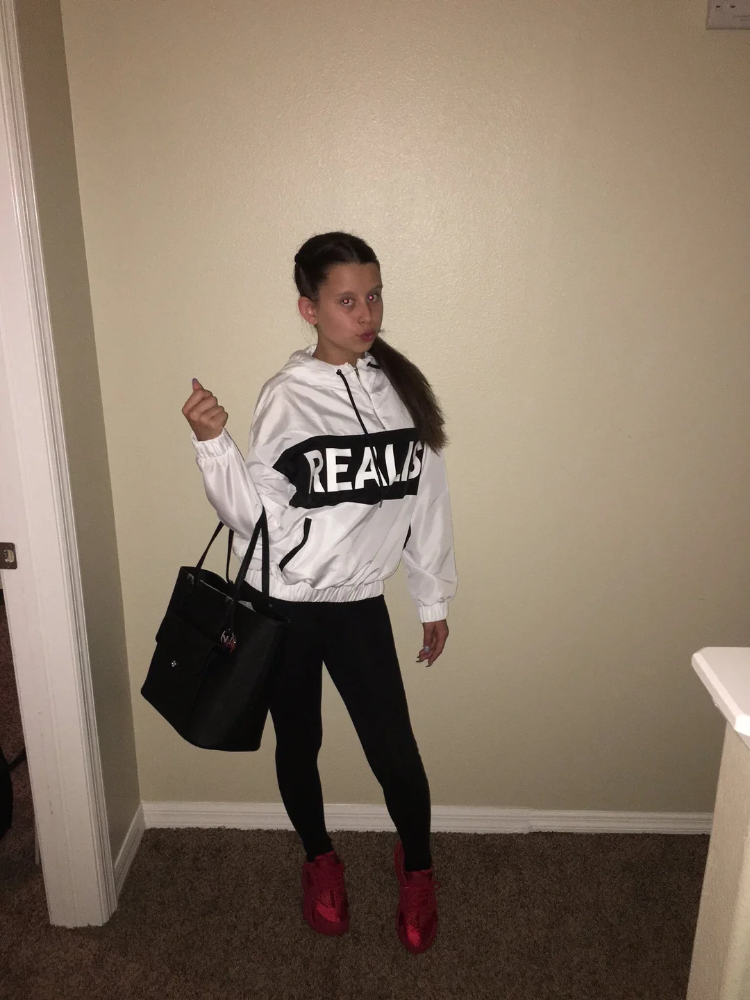
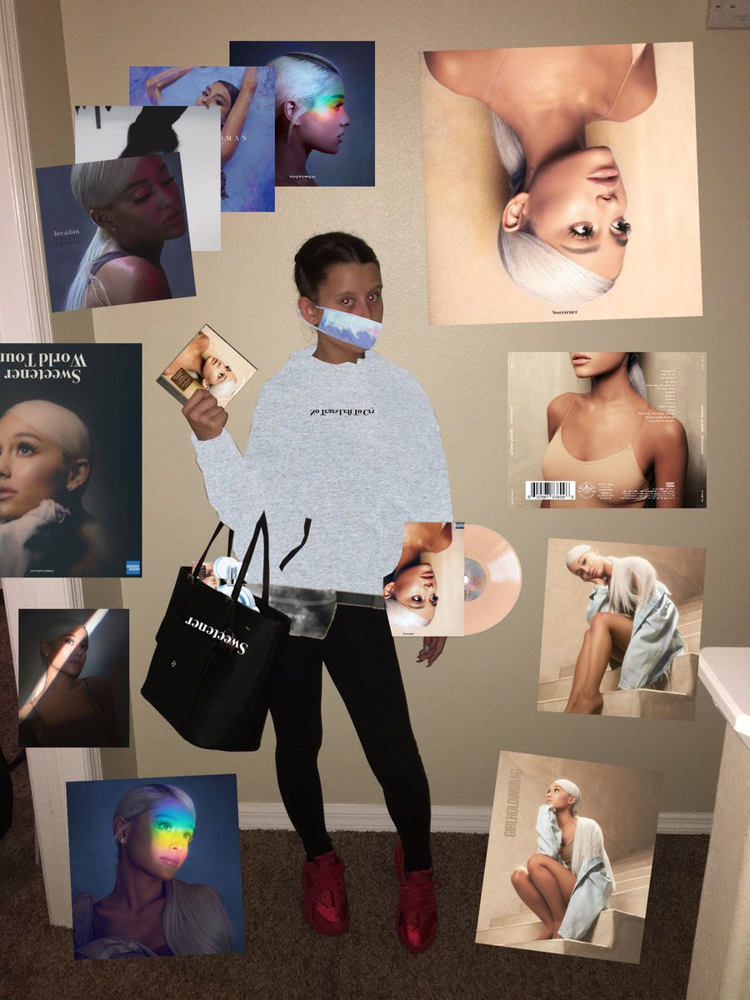
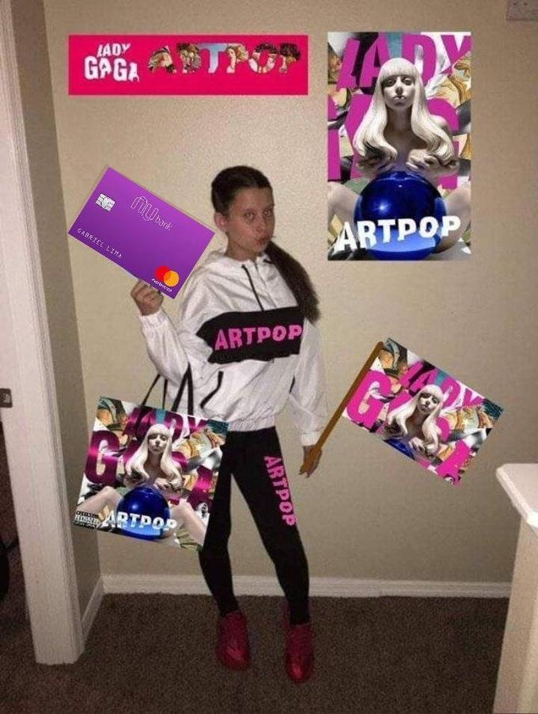
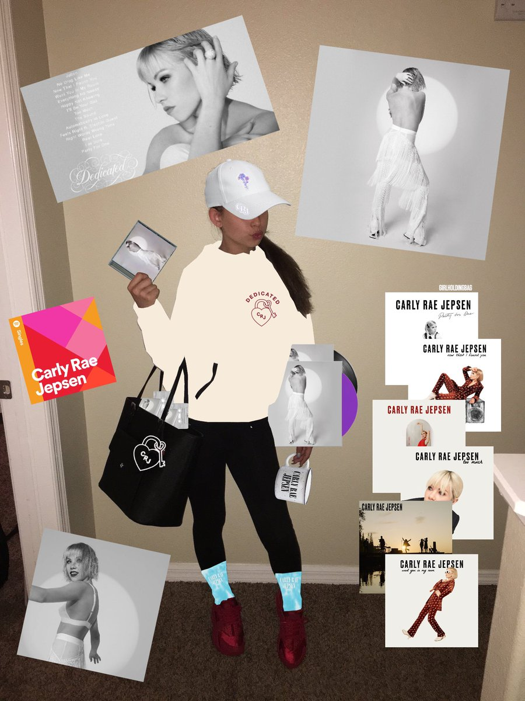
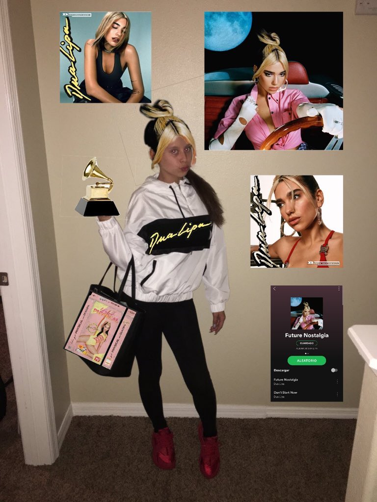
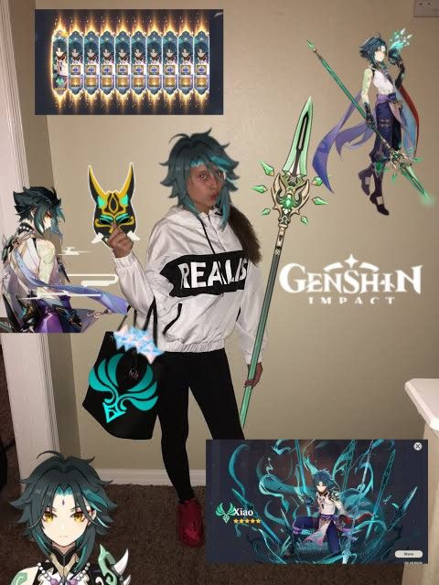
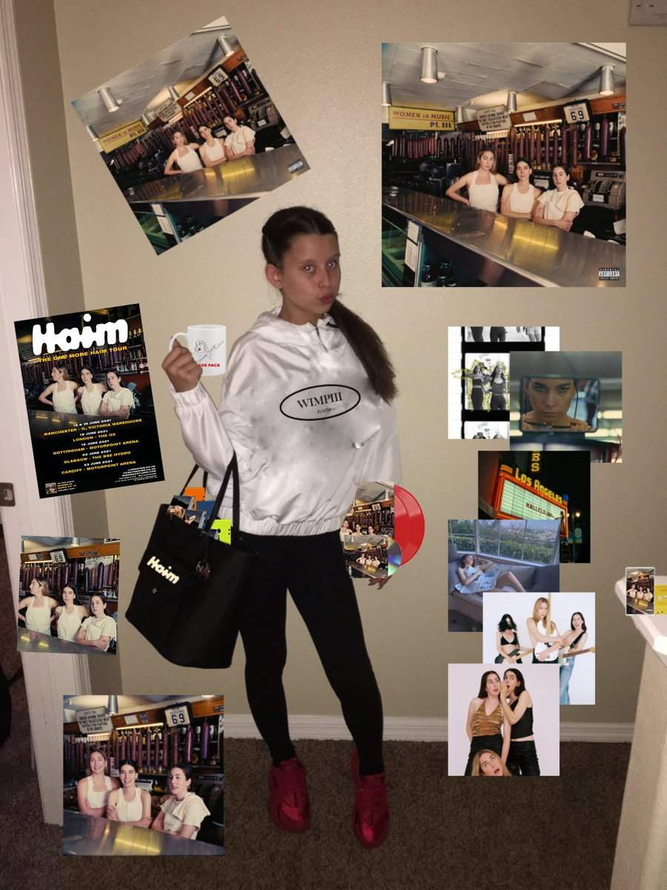
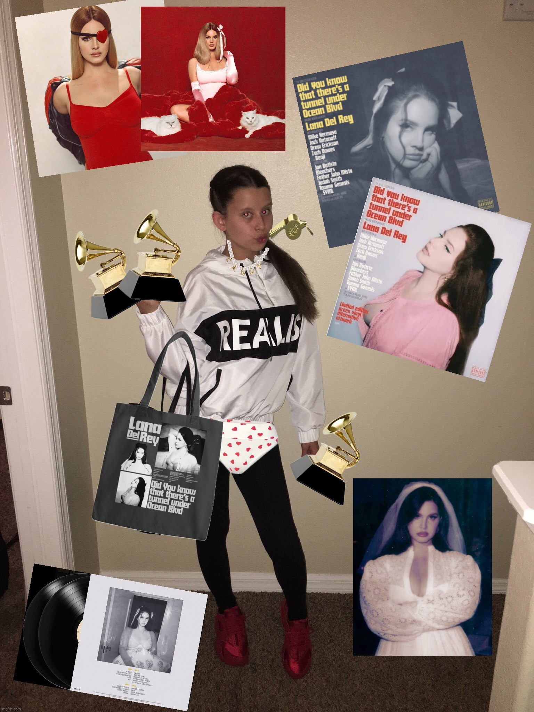
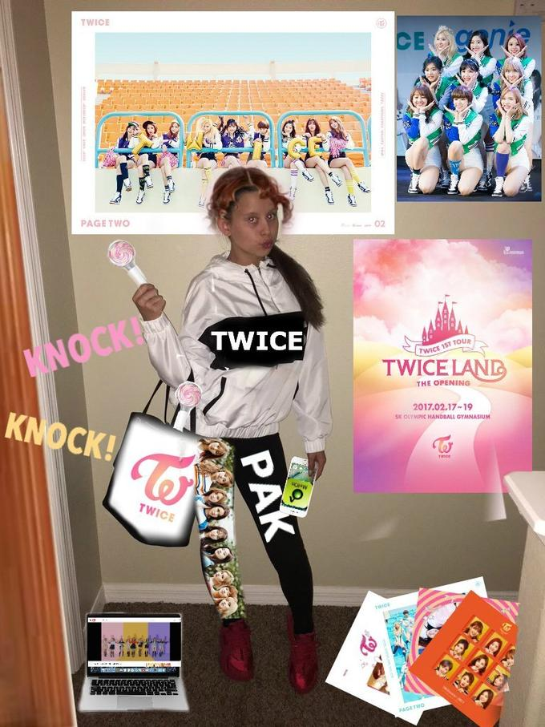
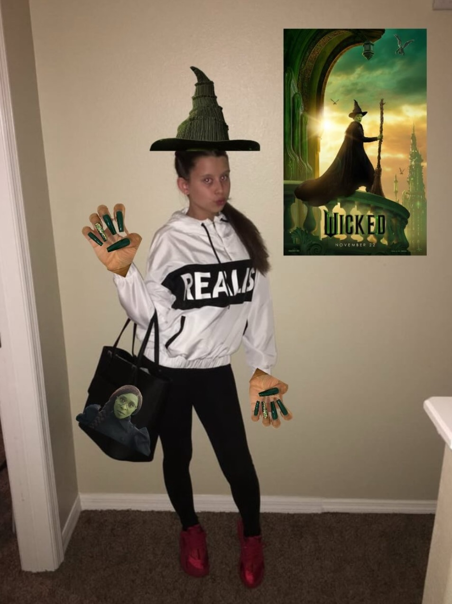

Stan Twitter Girl, also known as Bag Girl Meme or Fangirl, refers to a meme featuring the influencer and TikToker Arii (real name Ariana Renee Trejos) who posted a series of photos posing in front of a blank wall with a white hoodie that says "Realist" and a black purse, one of which became widely used as an exploitable format to express support for different subjects and media products, such as films, music and TV shows. The meme went viral beginning in 2017 on Twitter, Instagram and Pinterest, followed by another notable resurgence in late 2024.
In particular, the image of Arii posing in front of the beige wall making a duck face-like expression with her right arm turned upward went viral and became a prevalent meme on Twitter in the following year (shown above).
According to an image search on TinEye, the earliest known example of the "Stan Twitter Girl" meme comes from a Tumblr post made on October 7th, 2016, which references Chinese rapper Zhang Yixing. On October 15th, a since-deleted Twitter user then posted another early example of the meme referencing the K-pop group Twice.Arii's 2016 photoshoot continued to be used as an exploitable meme format going into 2017. Initially, it was picked up primarily by K-pop fans. Companies have also used the exploitable image as content for social media, like the Brazilian bank Nubank, which referred to Lady Gaga's ARTPOP album being released on the same day the bank was created. The post received 8,000 likes and 3,000 retweets since the upload on April 13th, 2021.
Three Words to Describe Bag Girl:
impactful
worthy
sickening

Bag Girl with Ariana Grande "Sweetener" Merchandise

Bag Girl with Lady Gaga "Artpop" Merchandise

Bag Girl with Carly Rae Jepson "Dedicated" Merchandise

Bag Girl with Dua Lipa "Future Nostalgia" Merchandise

Bag Girl with "Genshin Impact" Merchandise

Bag Girl with Haim "Women in Music, Pt. III (Expanded Edition)" Merchandise

Bag Girl with Lana Del Rey "Did you know that there's a tunnel under the Ocean Blvd" Merchandise

Bag Girl with TWICE Merchandise

Bag Girl with Wicked "Elpheba" Merchandise